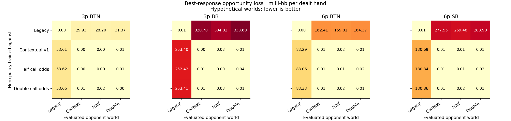
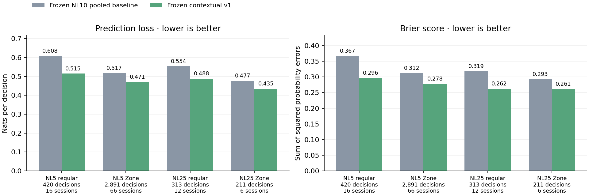
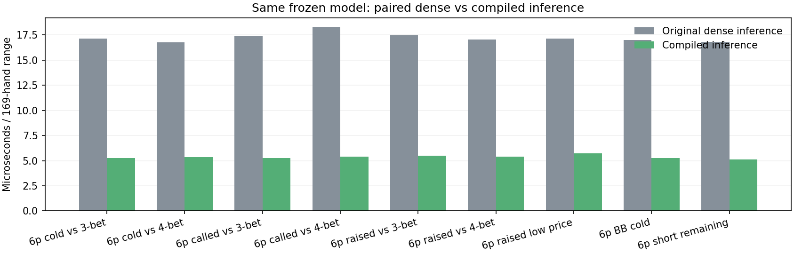
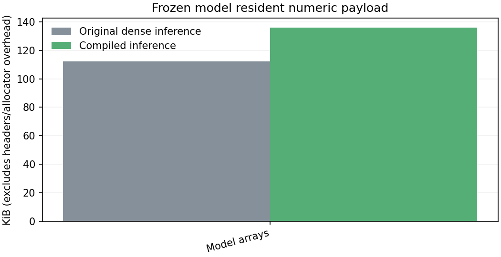
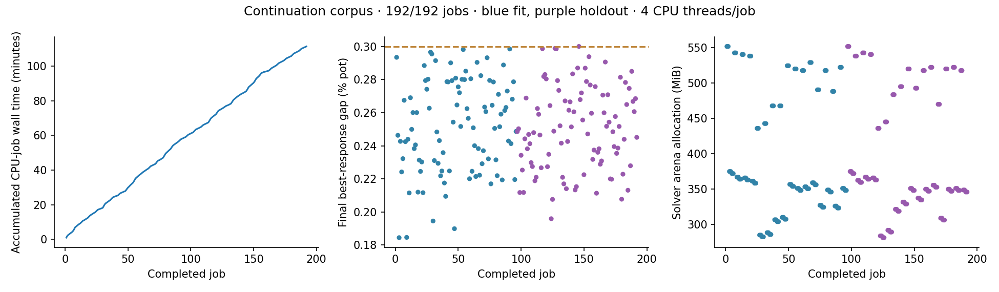
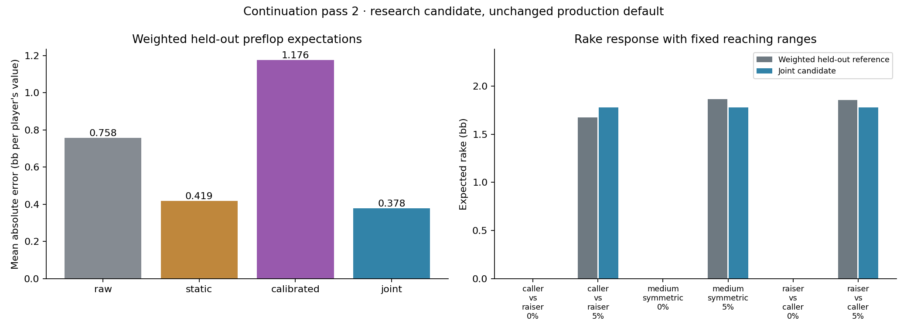
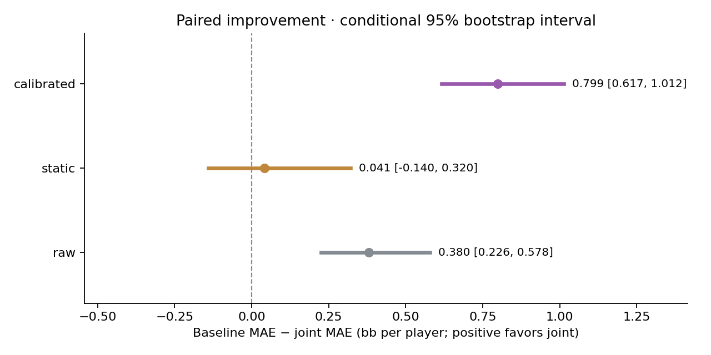

Opponent behavior
16 strategy solves
64 cross-model evaluations distinguish important assumptions from narrow weak-hand stress tests. Four separate Ignition sources test transfer.
Strategy sensitivity → · Source transfer →64 cross-model evaluations distinguish important assumptions from narrow weak-hand stress tests. Four separate Ignition sources test transfer.
Strategy sensitivity → · Source transfer →Paired dense/compiled range predictions. No observed f32 changes across 2,048 test contexts; about 24 KB extra numeric storage.
Timing, memory and parity →All references converged. The joint value/rake fit improves over calibrated; its small lead over static is uncertain.
Study design and results →Each hero strategy is evaluated against four hypothetical opponent models. The broad legacy/contextual choice matters more in these fixtures than halving or doubling weak-hand cheap-call odds.

Opportunity costs are within the configured models, in milli-bb per dealt hand. The stress models are assumptions, not confidence bounds or observed win rates. Study method and limitations.
The frozen NL10 predictor improves average log loss and Brier score on separate NL5/NL25 regular and Zone samples. Some subgroups remain uncertain, and regular NL25 still overpredicts calls.

10,179 validated hands; 3,835 scored re-raise decisions. Source blinds are 0.4/1. This offline check does not change the app's source guard or establish a fresh NL10 holdout. Coverage and subgroup results.
Precomputed baseline logs and hand terms replace repeated feature work. The comparison holds the model, context and host constant within each paired run.


This measures full-range prediction, not total solve speed. The one-time initialization is slightly slower. Cold-start measurements · Run history.
The source-format fixture exercises contextual inference. The compact $2/2 and $2/5 fixtures check that unsupported formats retain their existing policies.


These compact fixtures are not the user's saved full trees. Memory is explicitly allocated vector payload, not total process memory. Metric definitions and limitations.
The first audit exposed missing rake sensitivity and inconsistent total pot values. The new study estimates weighted preflop expectations from 32 stratified flops, with separate boards reserved for evaluation.
Held-out mean absolute value error: joint 0.378 bb per player, static 0.419, calibrated 1.176. The paired interval supports improvement over calibrated in this sample, but does not establish the small advantage over static. Broader ranges and game settings still need evaluation.



Reference jobs run on the CPU with checkpoints. The candidate fits expected rake and value transfer jointly; it does not use the future board as an input. No production pricing change is made by this study. Design and limitations · Initial audit.
{kind=link}